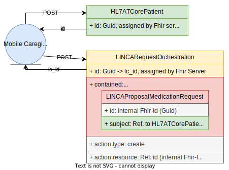
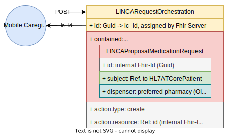
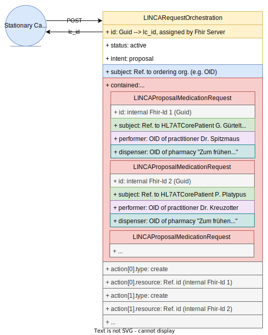
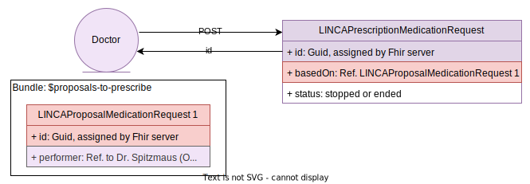
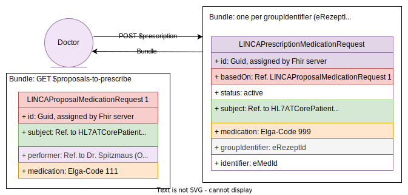
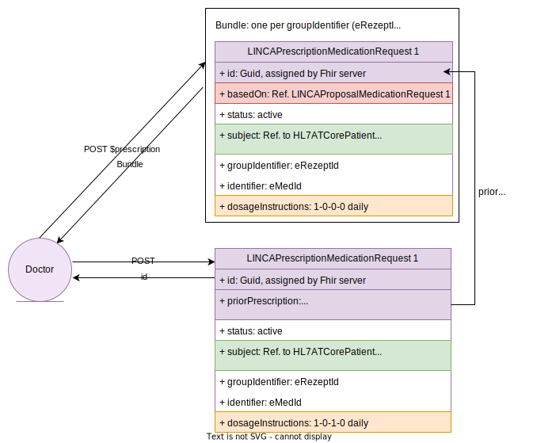
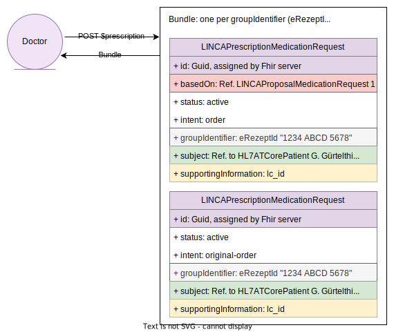
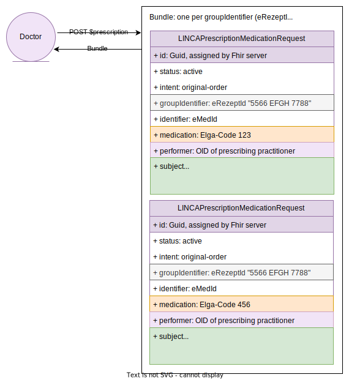

Linked Care Implementation Guide
0.9.1 - ci-build
Linked Care Implementation Guide
0.9.1 - ci-build
Linked Care Implementation Guide - Local Development build (v0.9.1). See the Directory of published versions
US001 Ordering single medication for a new client
User Susanne Allzeit (DGKP) is an employee at the mobile caregiver organization Pflegedienst Immerdar,
whose client, Renate Rüssel-Olifant, is not in the LINCA system yet.
Hence, Susanne Allzeit creates a client record in the system.
Now, it is possible to order prescriptions for Renate Rüssel-Olifant.
As Susanne Allzeit will pick up the medication on the go, she places the order
without specifying a pharmacy.
Client-side example implementation

US002 Re-stock order for existing client
User Susanne Allzeit (DGKP) is an employee at the mobile caregiver
organization Pflegedienst Immerdar, whose client, Renate Rüssel-Olifant, is
already registered as patient in the LINCA system.
Susanne Allzeit needs to re-stock prescription medication for Renate Rüssel-Olifant.
Hence, she places an order on LINCA referring to the existing patient
record of Renate Rüssel-Olifant.
Additionally, she specifies her preferred pharmacy, Apotheke 'Klappernder Storch', in advance
to collect the order there.
Client-side example implementation

US003 Inpatient care facility order
User Walter Specht (DGKP) is a caregiver in the inpatient care facility Haus Vogelsang.
He needs to collectively order prescription medication for several clients, amongst others
for Günter Gürtelthier and Patrizia Platypus. Patrizia's practitioner is
Dr. Kunibert Kreuzotter, Günter's practitioner is Dr. Silvia Spitzmaus.
Walter Specht places an order for all needed client prescription medication on LINCA
and specifies in advance the pharmacy Apotheke 'Zum frühen Vogel' that ought
to prepare the order
Client-side example implementation

US004 Modifying an order
User Walter Specht (DGKP) is a caregiver in the inpatient care facility Haus Vogelsang.
He has already placed a collective order for prescription medication for several clients on LINCA.
Now, he needs to modify details of that order, in particular he wants to update one
individual order position for his client Günter Gürtelthier.
The LINCA systems prevents Walter Specht from updating such a position
if Günter's practitioner, Dr. Silvia Spitzmaus, has already issued a prescription for that order position
Client-side example implementation

US005 Cancel individual order positions
User Walter Specht (DGKP) is a caregiver in the inpatient care facility Haus Vogelsang.
He has already placed a collective order for prescription medication for several clients on LINCA.
Now, he needs to cancel individual order positions for his client Patrizia Platypus.
He submits updates on those positions, providing a reason for cancellation, such as a medical reason,
and sets their status to 'cancelled'.
The LINCA systems prevents Walter Specht from submitting such cancellations
if Patrizia's practitioner, Dr. Kunibert Kreuzotter, has already issued a prescription for the original order position
Client-side example implementation

US006 Cancel an order in its entirety
User Walter Specht (DGKP) is a caregiver in the inpatient care facility Haus Vogelsang.
He has already placed a collective order for prescription medication for several clients on LINCA. Now, he needs to cancel the complete order due to a major mistake.
He submits a delete request on the order number, providing a reason for cancellation, such as a human error.
Then, either the whole order will be cancelled by the LINCA system, if for none of its positions the designated practitioner has already issued a prescription and the status is set to 'revoked' by LINCA, or the whole order will remain active if for any of its positions the designated practitioner has already issued a prescription. And positions for which the designated practitioner has not yet issued a prescription, will be promoted to the status 'cancelled' by the LINCA system
Client-side example implementation

US007 Check order status
User Walter Specht (DGKP) is a caregiver in the inpatient care facility Haus Vogelsang.
He has already placed a collective order for prescription medication for several clients on LINCA.
Walter Specht needs to know the status of that order, and he has the permission to read the
entire order.
Hence, he submits a read request on the order number, and his care software can use the returned LINCA order position chains, and present the status of the order and all its positions.
Client-side example implementation

US008 Get orders to prescribe
Practitioner Dr. Kunibert Kreuzotter is responsible for the LINCA registered care giver clients Patrizia Platypus and Renate Rüssel-Olifant, who are two of his patients.
Dr. Kunibert Kreuzotter has access to and permission in a practitioner role in the LINCA system,
hence he is expected to prescribe orders via the LINCA system.
When he submits a read request to the LINCA system he gets all open orders where he is mentioned as the designated practitioner,
e.g., all open orders for Patrizia Platypus and Renate Rüssel-Olifant.
Dr. Kreuzotters software can interpret the returned LINCA order position chains
and visually present the status of the order and all its positions.
Client-side example implementation

US009 Stop medication intake
Practitioner Dr. Silvia Spitzmaus is responsible for the LINCA registered care giver client Günter Gürtelthier.
She has received a LINCA order position requesting medication prescription for him.
She decides that Günter Gürtelthier shall no longer take the medication intended by that order position.
Hence, she submits an update on that order position with the status set to 'stopped' or 'ended', and her software will send that to the LINCA server, and the ordering care giver organization Haus Vogelsang will be informed that this position will not be prescribed further on.
Client-side example implementation

US010 Prescribe as ordered
Practitioner Dr. Wibke Würm is responsible for the LINCA registered mobile caregiver client Renate Rüssel-Olifant.
She has received a LINCA order position requesting medication prescription for her.
She decides to issue a prescription for the medication for Renate Rüssel-Olifant intended by that order position.
Hence, she submits a prescription for that position with the eMedId and eRezeptId she got
and her software will send that to the LINCA server,
and the ordering mobile caregiver organization Pflegedienst Immerdar will be informed that the order position has been prescribed as ordered,
and they will inform DGKP Susanne Allzeit.
Client-side example implementation

US011 Prescribe with medication adaptions
Practitioner Dr. Silvia Spitzmaus is responsible for the LINCA registered care giver client Günter Gürtelthier.
She has received a LINCA order position requesting medication prescription for him.
She decides that the medication intended by a particular order position needs to be adjusted.
Hence, she submits a prescription for that position with the eMedId and eRezeptId she got, with changed medication/quantity,
and her software will send that to the LINCA server,
and the ordering care giver organization Haus Vogelsang will be informed that the order position has been
prescribed with modified medication/quantity
Client-side example implementation

US012 Prescribe with dosage adaptions
Practitioner Dr. Silvia Spitzmaus is responsible for the LINCA registered care giver client Günter Gürtelthier. She has received a LINCA order position requesting medication prescription for him and has already
submitted a prescription for that order position.
She decides that the dosage instructions in the prior prescription need to be defined or modified.
Hence, she submits an update to that prescription with new dosage instructions,
and her software will send that to the LINCA server, and the ordering care giver organization Haus Vogelsang will be informed that the prescription has been updated with altered dosage
Client-side example implementation

US013 Prescribe supplementary article
Practitioner Dr. Silvia Spitzmaus is responsible for the LINCA registered care giver client Günter Gürtelthier.
She has received a LINCA order position requesting medication prescription for him.
She decides that an additional medication is needed for Günter Gürtelthier.
Hence, she creates and submits an additionally prescribed position referring to the LINCA order number and her software will send that to the LINCA server,and the ordering care giver organization Haus Vogelsang will be informed that the order has been extended with an additional position,
and that does not change anything about the fact that Dr. Spitzmaus cannot read other positions of that same order where she is not the designated practitioner
Client-side example implementation

US014 Get orders to dispense
Pharmacist Mag. Andreas Amsel, owner of the pharmacy Apotheke 'Zum frühen Vogel' has
access to and permission in a pharmacist role in the LINCA system.
When he is expected to fullfil medication orders for customers,
then he submits a read request for open orders where his pharmacy is mentioned as the designated dispenser.
He will receive a list of LINCA order position chains,
e.g., for orders for clients of Haus Vogelsang because they mentioned his pharmacy as preferred pick-up point,
and his software can interpret the returned LINCA order position chains,
and visually present and import the order and all its position
Client-side example implementation

US015 Walk-in LINCA dispense with QR code
Pharmacist Mag. Andreas Amsel, owner of the pharmacy Apotheke 'Zum frühen Vogel' has
access to and permission in a pharmacist role in the LINCA system.
When care giver Susanne Allzeit (DGKP) presents a barcode representing a prescription of a
LINCA order for her client Renate Rüssel-Olifant,
Then Mag. Andreas Amsel can scan that code at his POS,and his software can fetch the corresponding records from LINCA, and interpret the returned LINCA order position chains and visually present and import the positions included in that prescription for Renate Rüssel-Olifant
Client-side example implementation

US016 Finalize dispense
Pharmacist Mag. Andreas Amsel, owner of the pharmacy Apotheke 'Zum frühen Vogel' has
access to and permission in a pharmacist role in the LINCA system.
When he is expected to fullfil medication orders for a customer, e.g., Renate Rüssel-Olifant,
and he has a LINCA order Id to go with a purchase her care giver Susanne Allzeit just made for her,
then Mag. Andreas Amsel submits a dispense record for the order position in question
and his software will send that to the LINCA server,
and notify the ordering organization, Pflegedienst Immerdar, about the thus completed order position.
Client-side example implementation

US017 Partial dispense
Pharmacist Mag. Andreas Amsel, owner of the pharmacy Apotheke 'Zum frühen Vogel' has
access to and permission in a pharmacist role in the LINCA system.
When he is expected to fullfil medication orders for a customer, e.g., Renate Rüssel-Olifant,
and he has a LINCA order Id to go with a purchase her care giver Susanne Allzeit just made for her,
and he did not, or is not able to, dispense all of the product at once
then Mag. Andreas Amsel submits a partial dispense record for the order position in question
and his software will send that to the LINCA server,
and notify the ordering organization, Pflegedienst Immerdar, about the partial dispense.
Client-side example implementation